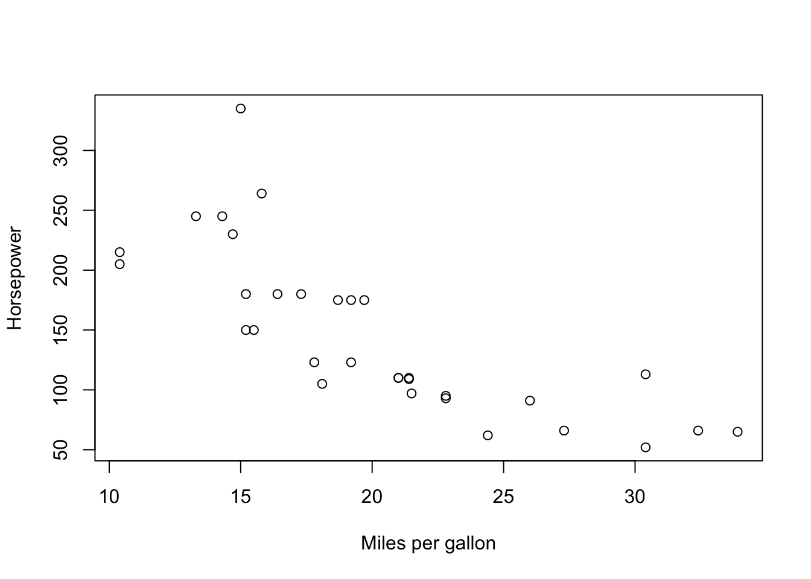
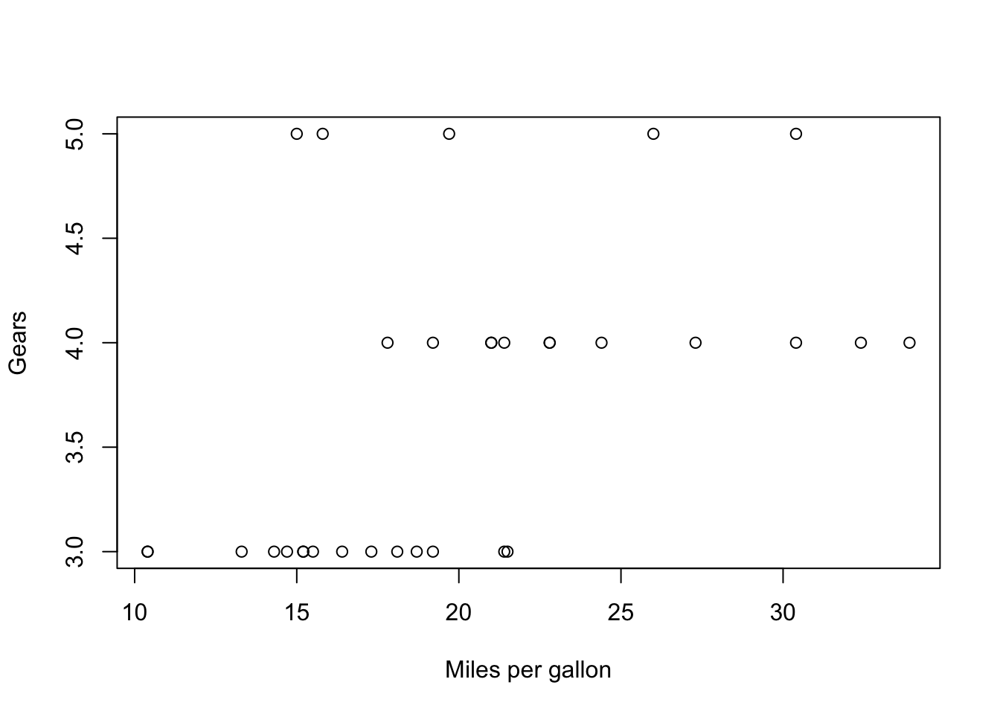
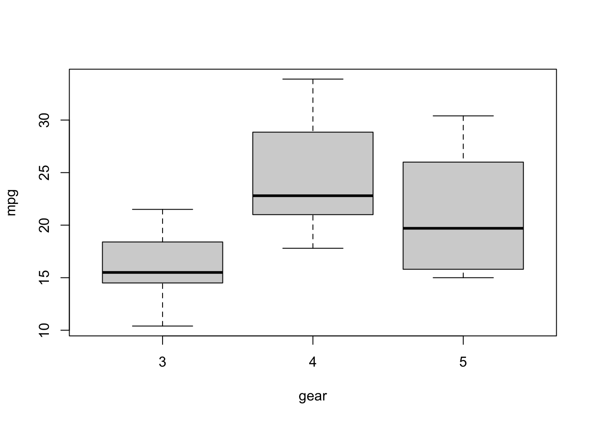
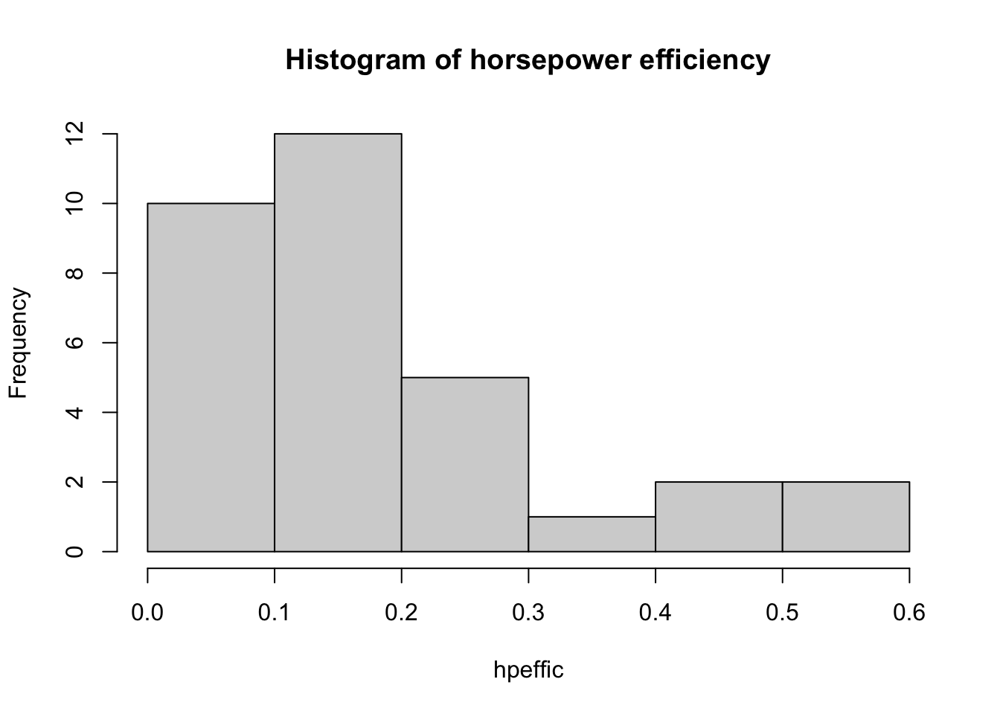
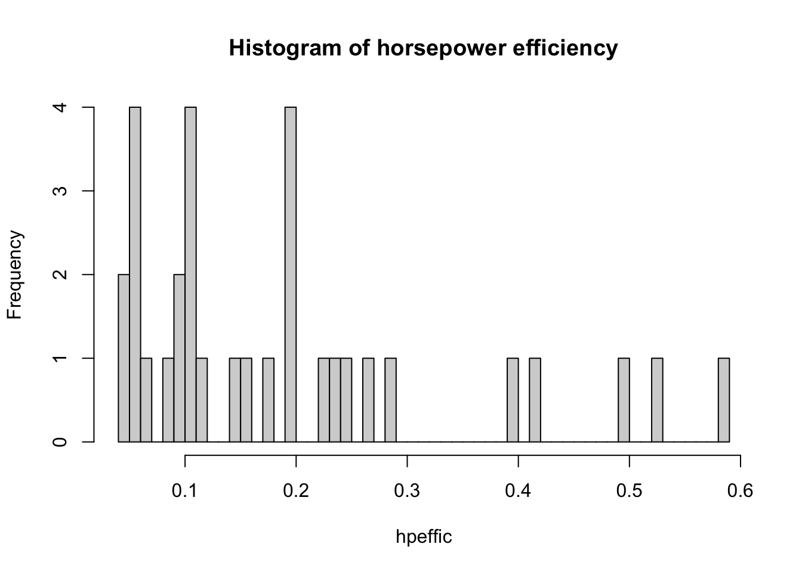
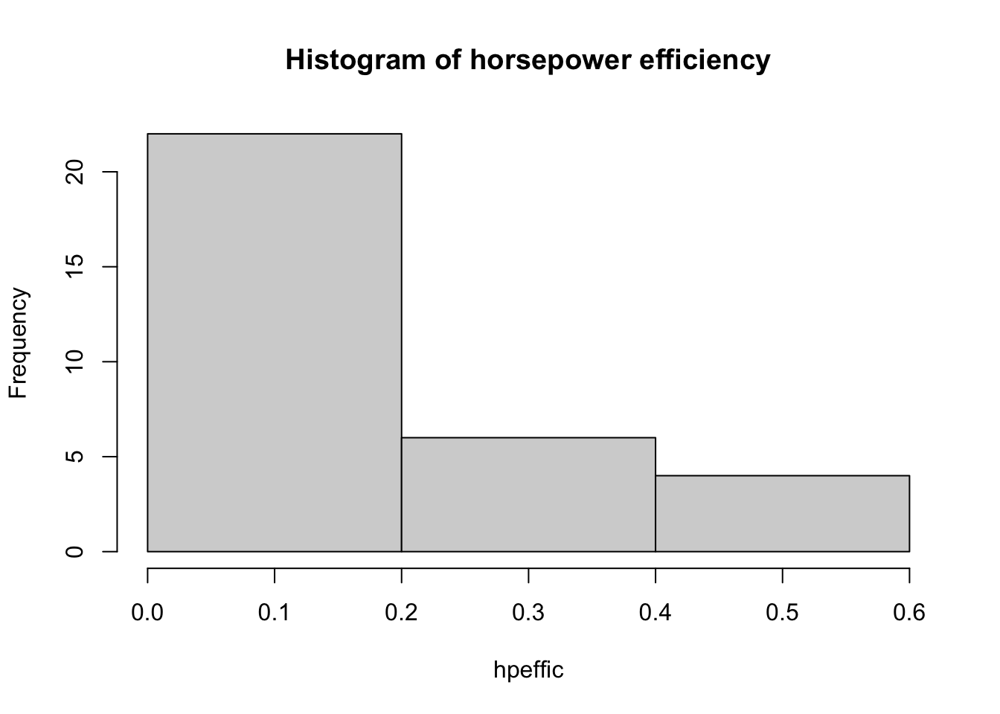

This page gives a lightning quick overview of how R works.
A fundamental part of coding is getting stuck. Thankfully, there are plenty of free resources for figuring out the basics of R.
Free online textbooks. One of the most popular is R for Data Science by Grolemund and Wickham. This gives an introduction to transforming datasets and visualizing data.
A version of the notes used in The University of Scranton’s DS 201 “Introduction to Data Science” class can be found here.
Like any other established programming language, R has documentation. The main page for R’s documentation is here, but typically a google search will direct you to the right place. For instance, testing out “r sort” has as its first hit the documentation for sorting a list.
Thousands of frustrated programmers have contributed to sites like Stack Exchange, where users post questions and answers to all sorts of problems. While documentation can be seen as more “official”, you might find that your questions are more often answered on Stack Exchange and other programming-centered forums.
As an undergrad, you can (…and should!) devote years to learning the intricacies of languages like R. After you figure out the basics, you can start digging into the really interesting stuff, like modeling, image processing, machine learning, and other relevant topics in STEM. For now though, let’s go through the basics:
Saying that R is a calculator is like saying a flamethrower is a mosquito repellent. However, at its core, R performs basic arithmetic. The operators for addition, subtraction, multiplication, and division are given by
The PEMDAS order of operations applies, although if you’re in doubt, adding additional parentheses is the way to go.
Q: Twitter sometimes generates controversy (actually, when does it not?) by asking people to evaluate 6/2*(1+2). What does R give? What different responses do you think are often provided? By using parentheses, how should the expression be written to remove any ambiguity? Also, what happens when you type in 6/2(1+2)?
Typing into the console at the bottom of your screen, the response from R is:
6/2*(1+2)## [1] 9We can expect that some people are thinking that the expression should be evaluated as
(6/2)*(1+2)## [1] 9There’s likely other people who believe that the expression should instead be
6/(2*(1+2))## [1] 1The important point here is that parentheses clear any ambiguity regarding PEMDAS. When in doubt, err on the side of more clarity.
R also can handle vectors, which are simply lists of numbers. To work with the vector \((2,3,5)\), for instance, let’s define \(V\) as
V = c(2,3,5)It appears as if nothing has happened, but in fact we have stored a new variable \(V\) which can be called on at any time. Simply type into the console
V## [1] 2 3 5Now we’re at the point where we might want to run several lines of code at once. This can be done through opening up an R script. To do so at the top left of your RStudio screen, click on File–> New File –> R Script. Doing so will give you a pane at the top of the screen. In the pane, type in the following, highlight both lines, and click “Run” at the top of the pane:
W = c(4,3,9)
print(W)## [1] 4 3 9Note that the first line defines a new variable \(W\), and the second line prints out the value of the variable. Now that you’ve defined \(V\) and \(W\), we can perform operations with the two variables. Tinker around and see what happens when you perform the following
For the first expression, we have
V + W## [1] 6 6 14So R is adding the first element of V to the first element of W, the second element of V to the second element of W, and so on.
When you have a list of numbers, you can also sort them
sort(V)## [1] 2 3 5If you need to go from largest to smallest, you can use the “decreasing” argument:
sort(W, decreasing = TRUE)## [1] 9 4 3R is used heavily by the statistics community because of its with in handling datasets. To see this, let’s work with a built in dataset provided by R. Type in
mtcars## mpg cyl disp hp drat wt qsec vs am gear carb
## Mazda RX4 21.0 6 160.0 110 3.90 2.620 16.46 0 1 4 4
## Mazda RX4 Wag 21.0 6 160.0 110 3.90 2.875 17.02 0 1 4 4
## Datsun 710 22.8 4 108.0 93 3.85 2.320 18.61 1 1 4 1
## Hornet 4 Drive 21.4 6 258.0 110 3.08 3.215 19.44 1 0 3 1
## Hornet Sportabout 18.7 8 360.0 175 3.15 3.440 17.02 0 0 3 2
## Valiant 18.1 6 225.0 105 2.76 3.460 20.22 1 0 3 1
## Duster 360 14.3 8 360.0 245 3.21 3.570 15.84 0 0 3 4
## Merc 240D 24.4 4 146.7 62 3.69 3.190 20.00 1 0 4 2
## Merc 230 22.8 4 140.8 95 3.92 3.150 22.90 1 0 4 2
## Merc 280 19.2 6 167.6 123 3.92 3.440 18.30 1 0 4 4
## Merc 280C 17.8 6 167.6 123 3.92 3.440 18.90 1 0 4 4
## Merc 450SE 16.4 8 275.8 180 3.07 4.070 17.40 0 0 3 3
## Merc 450SL 17.3 8 275.8 180 3.07 3.730 17.60 0 0 3 3
## Merc 450SLC 15.2 8 275.8 180 3.07 3.780 18.00 0 0 3 3
## Cadillac Fleetwood 10.4 8 472.0 205 2.93 5.250 17.98 0 0 3 4
## Lincoln Continental 10.4 8 460.0 215 3.00 5.424 17.82 0 0 3 4
## Chrysler Imperial 14.7 8 440.0 230 3.23 5.345 17.42 0 0 3 4
## Fiat 128 32.4 4 78.7 66 4.08 2.200 19.47 1 1 4 1
## Honda Civic 30.4 4 75.7 52 4.93 1.615 18.52 1 1 4 2
## Toyota Corolla 33.9 4 71.1 65 4.22 1.835 19.90 1 1 4 1
## Toyota Corona 21.5 4 120.1 97 3.70 2.465 20.01 1 0 3 1
## Dodge Challenger 15.5 8 318.0 150 2.76 3.520 16.87 0 0 3 2
## AMC Javelin 15.2 8 304.0 150 3.15 3.435 17.30 0 0 3 2
## Camaro Z28 13.3 8 350.0 245 3.73 3.840 15.41 0 0 3 4
## Pontiac Firebird 19.2 8 400.0 175 3.08 3.845 17.05 0 0 3 2
## Fiat X1-9 27.3 4 79.0 66 4.08 1.935 18.90 1 1 4 1
## Porsche 914-2 26.0 4 120.3 91 4.43 2.140 16.70 0 1 5 2
## Lotus Europa 30.4 4 95.1 113 3.77 1.513 16.90 1 1 5 2
## Ford Pantera L 15.8 8 351.0 264 4.22 3.170 14.50 0 1 5 4
## Ferrari Dino 19.7 6 145.0 175 3.62 2.770 15.50 0 1 5 6
## Maserati Bora 15.0 8 301.0 335 3.54 3.570 14.60 0 1 5 8
## Volvo 142E 21.4 4 121.0 109 4.11 2.780 18.60 1 1 4 2Here you get a list of car names and their corresponding performance features. You can see the first few lines of the dataset by typing in
head(mtcars)## mpg cyl disp hp drat wt qsec vs am gear carb
## Mazda RX4 21.0 6 160 110 3.90 2.620 16.46 0 1 4 4
## Mazda RX4 Wag 21.0 6 160 110 3.90 2.875 17.02 0 1 4 4
## Datsun 710 22.8 4 108 93 3.85 2.320 18.61 1 1 4 1
## Hornet 4 Drive 21.4 6 258 110 3.08 3.215 19.44 1 0 3 1
## Hornet Sportabout 18.7 8 360 175 3.15 3.440 17.02 0 0 3 2
## Valiant 18.1 6 225 105 2.76 3.460 20.22 1 0 3 1The beauty of R is that you can perform common calculations on this dataset with ease.
First off, if we want to isolate a single variable, we use the accessor symbol “$” (…yes, it’s just a dollar sign). So, for instance, if we want a listing of mpg’s for cars, we type
mtcars$mpg## [1] 21.0 21.0 22.8 21.4 18.7 18.1 14.3 24.4 22.8 19.2 17.8 16.4 17.3 15.2 10.4
## [16] 10.4 14.7 32.4 30.4 33.9 21.5 15.5 15.2 13.3 19.2 27.3 26.0 30.4 15.8 19.7
## [31] 15.0 21.4This gives a vector with entries of mpg for each car. From here, we’re off to the races (especially with this dataset), since we can figure out a host of statistics. We might want to find the maximum and minimum mpg. This can be done with
max(mtcars$mpg)## [1] 33.9min(mtcars$mpg)## [1] 10.4We can do the same with other quantities:
#mean (or average)
mean(mtcars$mpg)## [1] 20.09062#standard deviation (a measure of spread)
sd(mtcars$mpg)## [1] 6.026948#median (half the entries above this value, half below)
median(mtcars$mpg)## [1] 19.2#range (maximum value minus minimum value)
range(mtcars$mpg)## [1] 10.4 33.9Note the hashtags appearing before the computations. This is called commenting. Comments are not read by R, but are used for guides to remind yourself what the code is doing. In R, all comments must begin with a “#” symbol.
Sometimes we will need to define new variables which are combinations of existing variables. For instance, one might be interested in creating a new variable called horsepower efficiency (Note: the author is a mathematician, not an auto mechanic. I have no clue if this is a real thing…), which we will define by miles per gallon divided by horsepower, or
\[ \hbox{ HPE} = \mathrm{MPG}/\mathrm{HP}.\] Here \(MPG\) is the miles per gallon of a car, and \(HP\) is its horsepower. In R, we can calculate the HPE by
hpeffic = mtcars$mpg/mtcars$hp Now we can start answering questions about HPE
Q: Which cars have HPE greater than .1?
This is done by using the which function. This gives indices of a list which satisfy a certain condition.
ind = which(hpeffic > .1)
rownames(mtcars)[ind]## [1] "Mazda RX4" "Mazda RX4 Wag" "Datsun 710"
## [4] "Hornet 4 Drive" "Hornet Sportabout" "Valiant"
## [7] "Merc 240D" "Merc 230" "Merc 280"
## [10] "Merc 280C" "Fiat 128" "Honda Civic"
## [13] "Toyota Corolla" "Toyota Corona" "Dodge Challenger"
## [16] "AMC Javelin" "Pontiac Firebird" "Fiat X1-9"
## [19] "Porsche 914-2" "Lotus Europa" "Ferrari Dino"
## [22] "Volvo 142E"Q: Which car(s) have the smallest HPE? What is this smallest value?
rownames(mtcars)[which.min(hpeffic)]## [1] "Maserati Bora"min(hpeffic)## [1] 0.04477612R has built in features for producing to make nice looking visuals. Let’s take a look at a scatterplot which plots two features on a plane. We’ll do a scatter plot comparing mpg and horsepower.
x = mtcars$mpg
y = mtcars$hp
plot(x,y, xlab = 'Miles per gallon', ylab = 'Horsepower')
Q: What happens if we don’t include the text xlab and ylab in the arguments for plot?
These arguments are not necessary, but they are nice to include if you’d like to make it clear to either yourself or someone else reading your code what your variables are.
Now let’s do the another plot, comparing mpg with gears
x = mtcars$mpg
y = mtcars$gear
plot(x,y, xlab = 'Miles per gallon', ylab = 'Gears')
The variable gears takes discrete values (e.g. 2,3,4) whereas mpg is a continuous variable, taking values like 13.5, 18.4, etc. In a case like this, it’s more informative to use a box plot.
boxplot(mpg~gear, data = mtcars)
Q: What do each of the features of this box plot represent? (A quick google search can answer this)
When you just want to look at a single continuous variable, use a histogram. This will bin values within a particular range. R does a pretty decent job deciding what the number of bins should be, most of the time, but sometimes you need to change the number of bins yourself.
hpeffic = mtcars$mpg/mtcars$hp
hist(hpeffic, main = "Histogram of horsepower efficiency")
Here’s too many bins:
hpeffic = mtcars$mpg/mtcars$hp
hist(hpeffic, main = "Histogram of horsepower efficiency", breaks = 50)
And too few bins:
hpeffic = mtcars$mpg/mtcars$hp
hist(hpeffic, main = "Histogram of horsepower efficiency", breaks = 3)